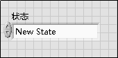

简单状态机
“简单状态机”模板便于定义各代码段的执行序列。这种特定的实现通常称为摩尔机－下一个状态取决于当前状态的决定。代码段可以随意增减，执行顺序可以随意更改，不必对应用程序的结构作大改动。
系统要求
LabVIEW基础版、完整版或专业版开发系统
使用条件
本模板适用于符合以下所有情况的应用程序：
例如，对下列应用程序采用状态机模式非常有效：
- 单个页面或包含多个选项卡的对话框。对话框的每个选项卡对应用于一种状态。用户单击特定的选项卡时，启动状态转移。对于每个选项卡，用户可执行的操作都包含在相应的状态中。
- 自动取款机(ATM)。该应用程序可能涉及以下几种状态：等待用户输入、检查请求的金额是否超过账户余额、吐钞、打印收据等。
- 执行一次测量，将结果记录至磁盘，然后等待其他用户操作的应用程序。该应用程序可能涉及以下几种状态：等待用户输入、执行测量、记录数据、显示数据等。
概述
注：
- 上图中的每一种状态对应于Main.vi中条件结构的一个分支。同时，每种状态：
- 执行某项操作
- 通过向While循环的移位寄存器传递指令，指定状态机的下一个状态。
- 初始化完成后，状态机转移至"Wait for Event"状态。该状态通过事件结构等待前面板发生改动。用户单击按钮时，由LabVIEW识别该事件，然后切换至事件结构的相应分支。接着由该分支发起状态转移，转移至相应的状态。
- 每种状态可以访问一个数据簇。簇中包含的数据类型通过Data.ctl定义。
- State.ctl是一个自定义类型，罗列了有效的状态。用自定义类型实现状态转移的方法限制了可能的转移操作数量，减小了状态机陷入不可识别状态的可能性。
- 只有Stop状态可以使应用程序停止运行。这种设计可以避免应用程序意外关闭或不完全关闭，原因是：
- 仅当用户需要停止应用程序时，才会运行关闭代码。
- 关闭代码总是运行直到彻底完成。
- 同一时间只运行一种状态，由于采用了单个While循环，所有任务按相同速度执行。如需实现按多种速度执行或并行执行的任务，可考虑采用“队列消息处理器”或“操作者框架”模板，上述模板均可在创建项目对话框中找到。
- "Wait for Event"状态是唯一能识别用户输入的状态。程序接收用户输入时，状态机必须处于该状态下。
运行本模板
- 在项目浏览器窗口，打开并运行Main.vi。
- 单击各前面板控件，显示不同的弹出对话框。
修改本模板
确定需求
对本模板进行自定义之前，应确定以下问题：
- 应用程序由哪些部分组成？该问题的答案决定了需要添加的状态。
- 每个状态的下一个状态是什么？该问题的答案决定了Next State枚举型的值。每个状态都将发送该枚举值至While循环的移位寄存器。
一个状态可在某种条件下转移至多个状态。例如，模板的"Wait for Event"状态可根据用户输入转移至另一状态。
- 每个状态需要访问的数据是什么？该问题的答案决定了需要添加至Data.ctl的数据类型。
- 可能发生哪些错误？应用程序应该如何响应这些错误？该问题的答案确定了错误处理机制。
添加初始化代码
按照下列步骤为应用程序初始化添加代码：
- 选择条件结构的Initialize条件分支。
- 为应用程序初始化添加代码。例如，可能需要打开一个磁盘文件用于记录，可能需要对Data.ctl中的数据设定初始值。
- 确定待转移的下一个状态。默认情况下，"Initialize"状态转移至"Wait for Event"状态：

根据应用程序的需求，用户可修改该代码，转移至其他状态。
添加启动状态转移的控件
- 在前面板上添加一个控件。
- 选择条件结构的"Wait for Event"分支。
- 在事件结构中添加事件分支。
- 配置事件结构：当新控件的值发生变化时，触发事件。例如：
- 单击确定。LabVIEW会在事件结构中创建一个分支。
- 在分支中，为新控件拖曳程序框图接线端。
- 确定用户与该控件交互后待转移的状态，将枚举型的值设为这个状态，然后连线至Next State输出隧道：

待转移的状态不存在的情况下，需要添加状态。
添加状态
按照下列步骤，添加状态：
- 更新State.ctl自定义控件，其中包含有效状态：
- 选定一个State.ctl枚举型，然后打开自定义类型：
LabVIEW会显示控件编辑器窗口。
- 在状态枚举型中为新状态添加项。
- 输入新状态的名称。例如：

- 单击控件外的区域，保存名称。
- 选择文件»应用改动。
- 将状态添加至状态机：
- 在Main.vi的条件结构中添加一个分支。
- 为该状态添加执行代码。完成该步骤时，需注意下列事项：
- 通过“按名称解除捆绑”和“按名称捆绑”函数访问和修改状态数据：
- 将函数的错误接线端与错误移位寄存器相连。
- 连线“假”常量至布尔输出隧道。只有"Stop"状态可以使循环停止运行。
- 必须为每种状态设定待转移的下一个状态。将下一个状态的值连接至"Next State"输出隧道。连入该接线端之前，还可以按条件实现一定的逻辑。下图显示了逻辑的一个范例：
上述代码中，如数据大于0，则下一个状态为User State 1。否则，下一个状态为User State 2。如需实现更高级的条件逻辑，可采用条件结构。
- 确保应用程序在一定条件下可转移至这种新的状态。
修改状态可访问的数据类型
按照下列步骤修改状态可访问的数据类型：
- 选定一个Data.ctl枚举型，然后打开自定义类型：
LabVIEW会显示控件编辑器窗口。
- 按需求定制控件。
- 选择文件»应用改动。
添加关闭代码
将关闭代码添加至条件结构的"Stop"分支。该分支是唯一能使应用程序停止执行的分支，因此必须确保添加至该分支的代码在应用程序停止之前执行。这样做可以防止意外关闭和不完全关闭。
关闭代码通常实现下列任务：
- 关闭全部打开的引用，释放内存。
- 刷新使用中的缓冲区。
- 向硬件输入通道写入安全值。
添加错误处理
默认情况下，任意函数的错误输出接线端返回错误时，本模板将停止执行。根据应用程序的需求，可能要忽略特定的错误，或实现更高级的错误处理。按照下列步骤，添加错误处理：
- 添加一个错误状态。
- 在错误状态中，按照需求创建处理错误的代码。
- 对于其他状态，确保出错时转移至错误状态。例如：
删除用户界面
如应用程序不需要用户界面，可按照下列步骤删除用户界面：
- 删除全部前面板输入和显示控件。
- 删除Main.vi中条件结构的"Wait for Event"分支。
- 修复断线。
也可从State.ctl中删除Wait for Event。这一操作可确保状态机永远不会试图转移至这个已被删除的状态。不过在删除操作之前，应该为应用程序中所有设为该种状态的枚举型添加一项注释。保存更改后的State.ctl，枚举型的值会更新。如有需要，可输入新的状态，或对原有状态进行更改。
相关信息
关于本模板使用的LabVIEW概念或对象的详细信息，请在LabVIEW中单击帮助»LabVIEW帮助，查看LabVIEW帮助。当光标移动到各个LabVIEW对象上时，即时帮助窗口中显示对象的基本信息。选择帮助»显示即时帮助，打开即时帮助窗口。
关于修改本模板以用于测量应用程序的范例，见创建项目对话框中的有限测量范例项目。
关于本模板开发者走查的详细信息见ni.com。
法律信息
版权
© 2016 National Instruments. 版权所有
根据版权法，未经National Instruments公司事先书面同意，本发行物不得以任何形式（包括电子或机械形式）进行全部或部分复制或传播，包括影印、录制、储存于任何信息检索系统中，以及翻译。
National Instruments公司尊重他方的知识产权，也恳请用户能给予我们同样的尊重。NI软件受版权法及其他知识产权法的保护。在将NI软件用于复制为他方所有的软件或其他资料的任何场合，NI软件仅可用于在符合许可证或其他法律限制的情况下复制上述资料。
最终用户许可协议和第三方法律声明
安装结束后，可在下列位置找到最终用户许可协议(EULA)和第三方法律声明：
- 法律声明位于<National Instruments>\_Legal Information和<National Instruments>目录下。
- EULA位于<National Instruments>\Shared\MDF\Legal\license目录下。
- 如需使NI产品生成的安装程序中包含法律相关信息，请查阅<National Instruments>\_Legal Information.txt。
美国政府的有限权利
如果客户隶属于美国政府的一个机构、部门、或其他单位，则本手册所涵盖的技术信息的使用、拷贝、复制、发布、修改、披露或传递应当受到适用于民间机构的联邦采购条例52.227-14和适用于军用机构的联邦国防采购条例补充规定252.227-7014和252.227-7015中有限权利条款的约束。
IVI Foundation版权声明
Content from the IVI specifications reproduced with permission from the IVI Foundation.
The IVI Foundation and its member companies make no warranty of any kind with regard to this material, including, but not limited to, the implied warranties of merchantability and fitness for a particular purpose. The IVI Foundation and its member companies shall not be liable for errors contained herein or for incidental or consequential damages in connection with the furnishing, performance, or use of this material.
商标
关于NI商标信息，请访问ni.com/trademarks的NI Trademarks and Logo Guidelines页面。此处提及的其他产品和公司名称均为其各自公司的商标或商业名称。
专利权
关于NI产品和技术的专利权，请查看软件中的帮助»专利信息、光盘中的patents.txt文件或ni.com/patents上的National Instruments Patent Notice。